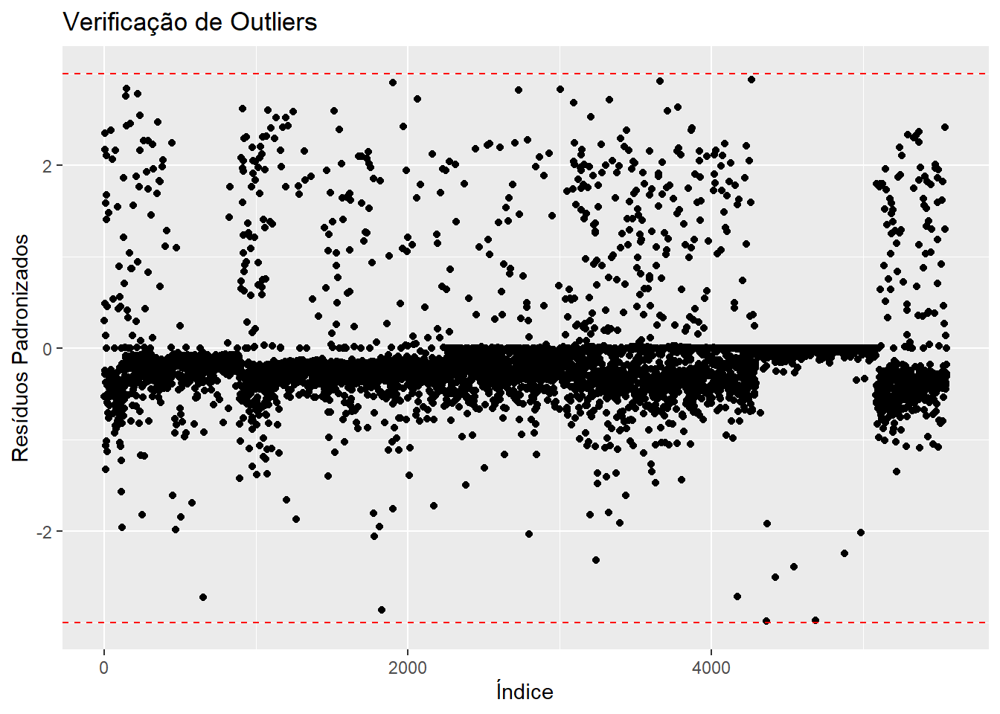
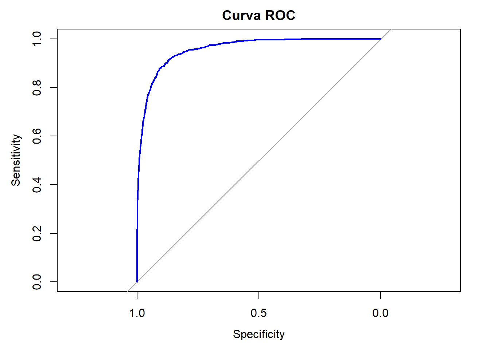
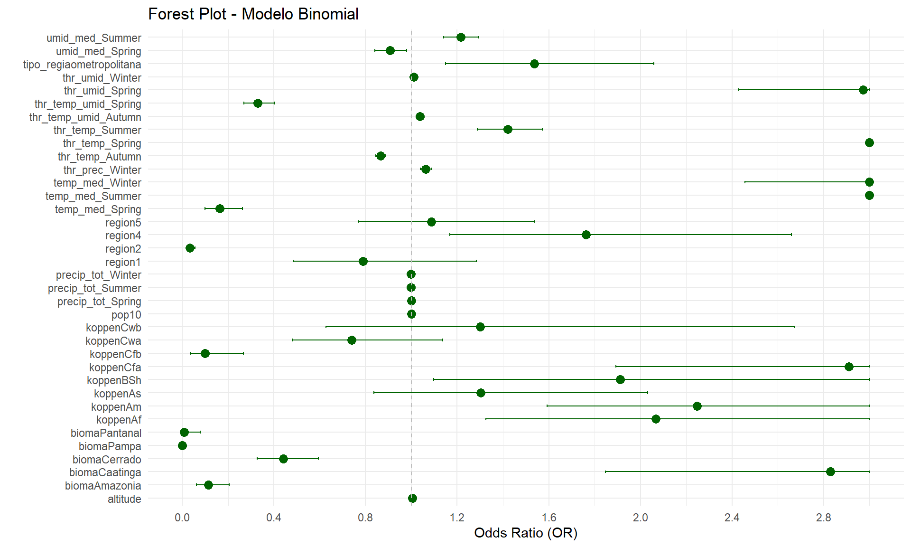

#Lendo
banco_determinantes <- read_csv2("banco_determinantes_bi.csv")
clima_org_model_10_16_season <- read_csv("clima_org_model_10_16_season.csv")
#Excluido as variáveis que não serão utilizadas
banco_determinantes <- banco_determinantes[,!(names(banco_determinantes) %in%
c("...1", "dengue_pattern_17_22"))]
clima_org_model_10_16_season <- clima_org_model_10_16_season[,!(names(clima_org_model_10_16_season) %in%
c("...1", "dengue_pattern", "precip_tot_Autumn"))]
# Renomeia a nova primeira coluna
colnames(clima_org_model_10_16_season)[1] <- "muni_code"
# Juntando
det_10_16 <- full_join(banco_determinantes, clima_org_model_10_16_season , by = "muni_code")
det_10_16 <- det_10_16[, !names(det_10_16) %in% c("pop22")]
## Removendo os bancos para a nálise ficar mais leve
remove(banco_determinantes)
remove(clima_org_model_10_16_season)Análise Regressão Logística Binomial A2 - 2010-2016 - com pesos
Bibliotecas
Bancos
Juntando os bancos de cada período para as modelagens dos períodos.
A precipitação total no outono (“precip_tot_Autumn”) não demonstrou uma relação significativa com a transmissão da dengue (p-valor = 0,214), o que sugere que não há evidências suficientes para incluí-la no modelo, levando à sua remoção da análise.
Análise 2010-2016
Análise do período de 2010-2016, primeira parte de uma série temporal da classificação de padrões de transmissão de todos os municípios brasileiros para dengue.
1. Arrumando variáveis
# Converter variáveis numéricas com vírgula decimal e categorizar as variáveis de texto
det_10_16 <- det_10_16 %>%
mutate(
across(where(~ all(grepl("^[0-9,.]+$", .))), ~ as.numeric(gsub(",", ".", .))),
across(where(is.character), as.factor))
det_10_16$dengue_pattern_10_16 <- as.factor(det_10_16$dengue_pattern_10_16)
# Visão geral dos dados
summary(det_10_16) muni_code region tipo_regiao altitude
Min. :1100015 Min. :1.000 metropolitana : 445 Min. : 1.67
1st Qu.:2512126 1st Qu.:2.000 nao metropolitana:5125 1st Qu.: 222.60
Median :3146280 Median :3.000 Median : 427.60
Mean :3253591 Mean :2.898 Mean : 451.24
3rd Qu.:4119190 3rd Qu.:4.000 3rd Qu.: 650.83
Max. :5300108 Max. :5.000 Max. :1601.42
koppen pop10 prop_residuo prop_esgot
Aw :1337 Min. : 805 Min. : 0.00 Min. : 0.00
Cfa :1138 1st Qu.: 5235 1st Qu.: 54.33 1st Qu.: 12.85
As : 892 Median : 10934 Median : 74.08 Median : 38.03
BSh : 420 Mean : 34274 Mean : 70.21 Mean : 42.27
Cwa : 407 3rd Qu.: 23421 3rd Qu.: 89.22 3rd Qu.: 70.44
Cfb : 405 Max. :11253503 Max. :100.00 Max. :100.00
(Other): 971 NA's :4
bioma dengue_pattern_10_16 temp_med_Autumn umid_med_Autumn
Amazonia : 503 0:4915 Min. :12.90 Min. :52.73
Caatinga :1095 1: 655 1st Qu.:19.37 1st Qu.:72.58
Cerrado :1062 Median :22.72 Median :77.93
Mata Atlantica:2741 Mean :22.25 Mean :76.60
Pampa : 160 3rd Qu.:25.36 3rd Qu.:81.53
Pantanal : 9 Max. :28.18 Max. :91.90
NA's :3 NA's :3
thr_temp_Autumn thr_umid_Autumn thr_prec_Autumn thr_temp_umid_Autumn
Min. : 0.00 Min. : 0.00 Min. : 0.00 Min. : 0.00
1st Qu.:38.57 1st Qu.:81.86 1st Qu.:18.00 1st Qu.:35.29
Median :84.43 Median :90.57 Median :23.43 Median :61.71
Mean :66.88 Mean :83.54 Mean :26.76 Mean :58.77
3rd Qu.:92.00 3rd Qu.:91.86 3rd Qu.:31.71 3rd Qu.:86.00
Max. :92.00 Max. :92.00 Max. :88.57 Max. :92.00
temp_med_Spring umid_med_Spring precip_tot_Spring thr_temp_Spring
Min. :15.39 Min. :42.80 Min. : 0.0 Min. : 0.00
1st Qu.:21.58 1st Qu.:67.09 1st Qu.: 700.2 1st Qu.:68.14
Median :24.37 Median :71.88 Median :1667.6 Median :89.14
Mean :24.06 Mean :70.76 Mean :1443.3 Mean :77.53
3rd Qu.:26.29 3rd Qu.:76.70 3rd Qu.:2005.4 3rd Qu.:90.71
Max. :31.28 Max. :90.22 Max. :3257.9 Max. :90.71
NA's :3 NA's :3
thr_umid_Spring thr_prec_Spring thr_temp_umid_Spring temp_med_Summer
Min. : 0.00 Min. : 0.00 Min. : 0.00 Min. :18.47
1st Qu.:64.29 1st Qu.:17.14 1st Qu.:46.14 1st Qu.:23.49
Median :79.50 Median :34.29 Median :62.57 Median :24.94
Mean :71.55 Mean :30.18 Mean :59.01 Mean :24.67
3rd Qu.:89.14 3rd Qu.:40.57 3rd Qu.:74.14 3rd Qu.:25.94
Max. :90.71 Max. :78.43 Max. :90.71 Max. :28.77
NA's :3
umid_med_Summer precip_tot_Summer thr_temp_Summer thr_umid_Summer
Min. :55.31 Min. : 0 Min. : 0.00 Min. : 0.00
1st Qu.:74.01 1st Qu.:1234 1st Qu.:88.43 1st Qu.:83.14
Median :77.75 Median :1861 Median :90.29 Median :87.43
Mean :76.77 Mean :1884 Mean :87.28 Mean :82.16
3rd Qu.:80.86 3rd Qu.:2400 3rd Qu.:90.29 3rd Qu.:90.14
Max. :91.60 Max. :5920 Max. :90.29 Max. :90.29
NA's :3
thr_prec_Summer thr_temp_umid_Summer temp_med_Winter umid_med_Winter
Min. : 0.00 Min. : 0.00 Min. :11.43 Min. :36.38
1st Qu.:27.57 1st Qu.:75.57 1st Qu.:18.17 1st Qu.:56.63
Median :42.14 Median :84.57 Median :21.63 Median :69.07
Mean :41.55 Mean :79.21 Mean :21.50 Mean :66.70
3rd Qu.:52.57 3rd Qu.:89.86 3rd Qu.:24.94 3rd Qu.:77.93
Max. :88.86 Max. :90.29 Max. :30.04 Max. :90.85
NA's :3 NA's :3
precip_tot_Winter thr_temp_Winter thr_umid_Winter thr_prec_Winter
Min. : 0.0 Min. : 0.00 Min. : 0.00 Min. : 0.000
1st Qu.: 149.8 1st Qu.:21.46 1st Qu.:33.29 1st Qu.: 2.714
Median : 396.7 Median :74.50 Median :75.57 Median : 9.143
Mean : 669.6 Mean :59.09 Mean :61.54 Mean :13.717
3rd Qu.:1020.8 3rd Qu.:92.00 3rd Qu.:90.43 3rd Qu.:23.429
Max. :3122.8 Max. :92.00 Max. :92.00 Max. :82.571
thr_temp_umid_Winter
Min. : 0.00
1st Qu.: 7.00
Median :16.71
Mean :31.09
3rd Qu.:49.43
Max. :92.00
2. Verificação dos pressupostos
1. Verificação de valores ausentes (NA)
Valores ausentes podem comprometer a análise, pois a regressão binomial não lida bem com dados incompletos. Se houver muitas ausências em uma variável, pode ser necessário removê-la ou imputar valores. Caso haja poucos valores faltantes, a remoção de linhas (na.omit()) pode ser suficiente. A ausência de NA indica que o banco está pronto para a modelagem.
Interpretação: Foram removidas 7 linhas, correspondendo a 7 municípios. Destes, 4 foram excluídos por não serem considerados municípios em 2010 ou por terem sido emancipados posteriormente: Mojuí dos Campos (PA), Pescaria Brava (SC), Pinto Bandeira (RS) e Paraíso das Águas (MT). Além disso, outros 3 municípios foram removidos devido à ausência de dados climáticos no mesmo ano, sendo eles: Fernando de Noronha (PE), Itaparica(BA) e Madre de Deus (BA).
2. Análise de multicolinearidade com VIF
A multicolinearidade ocorre quando variáveis independentes estão altamente correlacionadas, dificultando a interpretação do modelo. O VIF (Variance Inflation Factor) mede essa relação: valores acima de 5 indicam uma correlação preocupante, e acima de 10 exigem ajustes, como exclusão ou transformação de variáveis.
Interpretação: Nenhum está acima de 10 , então não precisa de ajuste, porém tem multicolinearidade moderada por que está de 5 a 10, mas isso o modelo pode dar conta no ajuste.
3. Verificação de outliers nos resíduos padronizados
Outliers podem distorcer os coeficientes da regressão binomial e afetar a qualidade da predição. A análise dos resíduos padronizados permite identificar observações extremas, geralmente consideradas problemáticas quando estão fora do intervalo de -3 a 3. Se houver muitos outliers, pode ser necessário revisar a entrada de dados ou aplicar transformações.
Interpretação: Foram retiradas 12 linhas ou seja 12 municípios com 8 de categoria 0 e 4 de categoria 1. Todos com intervalos acima de -3 e 3. Presentes na tabela outliers_binomial_model_10_16.csv.
# Filtrar apenas os muni_code onde há pelo menos um NA em outras colunas
muni_com_na <- det_10_16[rowSums(is.na(det_10_16)) > 0, "muni_code"]
# Exibir os muni_code afetados
print(unique(muni_com_na))# A tibble: 7 × 1
muni_code
<dbl>
1 1504752
2 2605459
3 2916104
4 2919926
5 4212650
6 4314548
7 5006275# Verificação de valores ausentes
cat("Valores ausentes por variável:\n")Valores ausentes por variável:print(colSums(is.na(det_10_16))) muni_code region tipo_regiao
0 0 0
altitude koppen pop10
0 0 4
prop_residuo prop_esgot bioma
0 0 0
dengue_pattern_10_16 temp_med_Autumn umid_med_Autumn
0 3 3
thr_temp_Autumn thr_umid_Autumn thr_prec_Autumn
0 0 0
thr_temp_umid_Autumn temp_med_Spring umid_med_Spring
0 3 3
precip_tot_Spring thr_temp_Spring thr_umid_Spring
0 0 0
thr_prec_Spring thr_temp_umid_Spring temp_med_Summer
0 0 3
umid_med_Summer precip_tot_Summer thr_temp_Summer
3 0 0
thr_umid_Summer thr_prec_Summer thr_temp_umid_Summer
0 0 0
temp_med_Winter umid_med_Winter precip_tot_Winter
3 3 0
thr_temp_Winter thr_umid_Winter thr_prec_Winter
0 0 0
thr_temp_umid_Winter
0 # Remover linhas com NA (se necessário)
det_10_16 <- na.omit(det_10_16)
# modelo geral sem categoria de referência
binomial_model <- glm(dengue_pattern_10_16 ~ ., data = det_10_16 , family = binomial)Warning: glm.fit: probabilidades ajustadas numericamente 0 ou 1 ocorreusummary(binomial_model)
Call:
glm(formula = dengue_pattern_10_16 ~ ., family = binomial, data = det_10_16)
Coefficients:
Estimate Std. Error z value Pr(>|z|)
(Intercept) -4.747e+03 1.995e+05 -0.024 0.981019
muni_code -7.144e-07 4.438e-07 -1.610 0.107408
region 7.243e-01 3.910e-01 1.853 0.063946 .
tipo_regiaonao metropolitana 5.700e-03 2.569e-01 0.022 0.982302
altitude 5.589e-03 1.402e-03 3.986 6.72e-05 ***
koppenAm 3.539e-01 4.070e-01 0.870 0.384496
koppenAs -8.680e-02 4.989e-01 -0.174 0.861866
koppenAw -2.063e-01 4.357e-01 -0.473 0.635891
koppenBSh 2.063e-01 5.897e-01 0.350 0.726419
koppenCfa 3.001e-01 5.418e-01 0.554 0.579643
koppenCfb -1.772e+00 1.023e+00 -1.733 0.083062 .
koppenCwa -6.722e-01 5.515e-01 -1.219 0.222898
koppenCwb -3.220e-01 7.763e-01 -0.415 0.678309
pop10 6.203e-05 2.750e-06 22.560 < 2e-16 ***
prop_residuo 4.857e-03 4.179e-03 1.162 0.245125
prop_esgot 1.407e-06 2.937e-03 0.000 0.999618
biomaCaatinga 2.243e+00 6.118e-01 3.667 0.000245 ***
biomaCerrado 1.120e+00 4.572e-01 2.449 0.014310 *
biomaMata Atlantica 1.988e+00 5.332e-01 3.728 0.000193 ***
biomaPampa -2.203e+01 6.905e+02 -0.032 0.974551
biomaPantanal 4.134e-02 1.292e+00 0.032 0.974484
temp_med_Autumn -7.991e-01 4.392e-01 -1.819 0.068840 .
umid_med_Autumn -3.174e-01 9.648e-02 -3.290 0.001004 **
thr_temp_Autumn -1.330e-02 2.051e-01 -0.065 0.948316
thr_umid_Autumn 1.600e-01 1.986e-01 0.806 0.420483
thr_prec_Autumn 2.926e-02 2.516e-02 1.163 0.244885
thr_temp_umid_Autumn -8.030e-02 1.971e-01 -0.407 0.683648
temp_med_Spring -1.204e+00 4.860e-01 -2.477 0.013248 *
umid_med_Spring -8.605e-02 1.076e-01 -0.799 0.424050
precip_tot_Spring 1.047e-03 5.945e-04 1.762 0.078106 .
thr_temp_Spring 9.422e-01 2.125e-01 4.434 9.24e-06 ***
thr_umid_Spring 7.294e-01 1.864e-01 3.913 9.12e-05 ***
thr_prec_Spring 1.385e-02 3.046e-02 0.455 0.649267
thr_temp_umid_Spring -7.164e-01 1.877e-01 -3.817 0.000135 ***
temp_med_Summer 1.597e+00 4.109e-01 3.886 0.000102 ***
umid_med_Summer 2.984e-01 1.076e-01 2.773 0.005548 **
precip_tot_Summer -4.741e-04 3.534e-04 -1.342 0.179752
thr_temp_Summer 5.124e+01 2.210e+03 0.023 0.981501
thr_umid_Summer 5.092e+01 2.210e+03 0.023 0.981616
thr_prec_Summer -1.589e-02 2.604e-02 -0.610 0.541637
thr_temp_umid_Summer -5.097e+01 2.210e+03 -0.023 0.981600
temp_med_Winter 1.324e+00 4.286e-01 3.089 0.002011 **
umid_med_Winter 1.260e-01 6.237e-02 2.020 0.043368 *
precip_tot_Winter -2.274e-03 6.313e-04 -3.602 0.000316 ***
thr_temp_Winter 1.902e-02 4.608e-02 0.413 0.679778
thr_umid_Winter 1.275e-02 4.379e-02 0.291 0.770996
thr_prec_Winter 5.712e-02 3.003e-02 1.902 0.057133 .
thr_temp_umid_Winter -1.432e-02 4.508e-02 -0.318 0.750721
---
Signif. codes: 0 '***' 0.001 '**' 0.01 '*' 0.05 '.' 0.1 ' ' 1
(Dispersion parameter for binomial family taken to be 1)
Null deviance: 4028.1 on 5562 degrees of freedom
Residual deviance: 2044.8 on 5515 degrees of freedom
AIC: 2140.8
Number of Fisher Scoring iterations: 19# 2. Verificação de Multicolinearidade (VIF)
# VIF só pode ser calculado em variáveis numéricas, então convertemos as categóricas para dummies
vif_values <- vif(binomial_model)
cat("\nValores de VIF:\n")
Valores de VIF:print(vif_values) GVIF Df GVIF^(1/(2*Df))
muni_code 6.631164e+01 1 8.143196e+00
region 6.234682e+01 1 7.896000e+00
tipo_regiao 1.339282e+00 1 1.157274e+00
altitude 3.339291e+01 1 5.778660e+00
koppen 2.178338e+03 8 1.616713e+00
pop10 1.871205e+00 1 1.367920e+00
prop_residuo 2.119128e+00 1 1.455722e+00
prop_esgot 2.588759e+00 1 1.608962e+00
bioma 1.280819e+02 5 1.624609e+00
temp_med_Autumn 3.013814e+02 1 1.736034e+01
umid_med_Autumn 1.244624e+02 1 1.115627e+01
thr_temp_Autumn 3.997747e+03 1 6.322774e+01
thr_umid_Autumn 1.897050e+03 1 4.355514e+01
thr_prec_Autumn 4.046715e+01 1 6.361380e+00
thr_temp_umid_Autumn 3.895907e+03 1 6.241720e+01
temp_med_Spring 2.653975e+02 1 1.629102e+01
umid_med_Spring 2.125558e+02 1 1.457929e+01
precip_tot_Spring 5.534034e+01 1 7.439109e+00
thr_temp_Spring 7.258899e+02 1 2.694234e+01
thr_umid_Spring 4.139748e+03 1 6.434087e+01
thr_prec_Spring 8.121916e+01 1 9.012168e+00
thr_temp_umid_Spring 3.933925e+03 1 6.272101e+01
temp_med_Summer 7.121843e+01 1 8.439101e+00
umid_med_Summer 1.636641e+02 1 1.279313e+01
precip_tot_Summer 3.484095e+01 1 5.902622e+00
thr_temp_Summer 2.909827e+09 1 5.394281e+04
thr_umid_Summer 2.312104e+11 1 4.808434e+05
thr_prec_Summer 8.008344e+01 1 8.948935e+00
thr_temp_umid_Summer 2.296305e+11 1 4.791978e+05
temp_med_Winter 4.935701e+02 1 2.221644e+01
umid_med_Winter 1.698030e+02 1 1.303085e+01
precip_tot_Winter 2.173493e+01 1 4.662074e+00
thr_temp_Winter 3.536222e+02 1 1.880485e+01
thr_umid_Winter 5.496020e+02 1 2.344359e+01
thr_prec_Winter 3.990022e+01 1 6.316662e+00
thr_temp_umid_Winter 5.735812e+02 1 2.394956e+01# 3. Verificação de Outliers com Resíduos Padronizados
# Criar uma coluna de resíduos padronizados
det_10_16$residuos <- rstandard(binomial_model)
# Filtrar apenas os outliers (resíduos <= -3 ou >= 3)
outliers <- det_10_16 %>% filter(residuos <= -3 | residuos >= 3)
# Verificar o novo banco de dados com os outliers
print(outliers)# A tibble: 12 × 38
muni_code region tipo_regiao altitude koppen pop10 prop_residuo prop_esgot
<dbl> <dbl> <fct> <dbl> <fct> <dbl> <dbl> <dbl>
1 1600501 1 nao metropol… 103. Am 20509 67.0 23.9
2 2111201 2 metropolitana 11.4 As 163045 25.3 1.98
3 3109006 3 metropolitana 901. Cwb 33973 73.8 58.6
4 3144805 3 metropolitana 1119. Cwb 80998 63.8 53.9
5 3302858 3 metropolitana 195. Am 168376 96.9 70.0
6 3303203 3 metropolitana 25.7 Aw 157425 99.0 92.1
7 3304144 3 metropolitana 39.3 Am 137962 94.9 85.4
8 3503901 3 metropolitana 772. Cfb 74905 79.0 74.2
9 3510609 3 metropolitana 780. Cfb 369584 94.4 87.7
10 3523107 3 metropolitana 761. Cfb 321770 94.9 86.6
11 3552502 3 metropolitana 791. Cfb 262480 73.7 69.9
12 4202404 4 metropolitana 245. Cfa 309011 40.0 32.0
# ℹ 30 more variables: bioma <fct>, dengue_pattern_10_16 <fct>,
# temp_med_Autumn <dbl>, umid_med_Autumn <dbl>, thr_temp_Autumn <dbl>,
# thr_umid_Autumn <dbl>, thr_prec_Autumn <dbl>, thr_temp_umid_Autumn <dbl>,
# temp_med_Spring <dbl>, umid_med_Spring <dbl>, precip_tot_Spring <dbl>,
# thr_temp_Spring <dbl>, thr_umid_Spring <dbl>, thr_prec_Spring <dbl>,
# thr_temp_umid_Spring <dbl>, temp_med_Summer <dbl>, umid_med_Summer <dbl>,
# precip_tot_Summer <dbl>, thr_temp_Summer <dbl>, thr_umid_Summer <dbl>, …# Salvando banco
write.csv2(outliers, "outliers_binomial_model_10_16.csv", row.names = FALSE)
# Removendo as observações que eram outliers (≤ -3 ou ≥ 3).
det_10_16<- det_10_16 %>% filter(residuos > -3 & residuos < 3)
#Visualization
ggplot(det_10_16 , aes(x = 1:nrow(det_10_16), y = residuos)) +
geom_point() +
geom_hline(yintercept = c(-3, 3), linetype = "dashed", color = "red") +
labs(title = "Verificação de Outliers", x = "Índice", y = "Resíduos Padronizados")
3. Modelo de regressão logística binomial
A variável dependente passou a ter pesos diferentes em suas categorias. A categoria 0 tinha aproximandamente 8 vezes o valor de municípios da categoria 1, então a categoria com menos observações foi otimizada de modo a aumentar a taxa de verdadeiros positivos nesta categoria, usanso peso 8. Ref: https://www.sciencedirect.com/science/article/abs/pii/S0950705114000239
Para cada categoria (em relação à referência “0”), o modelo estima coeficientes (Coefficients) para cada variável preditora. Esses coeficientes representam o efeito de cada variável sobre a probabilidade de estar nas categorias 1, em comparação com 0.
# Remover colunas pelo nome
det_10_16 <- det_10_16[, !names(det_10_16) %in% c("muni_code")]
# Transformar 'region' em fator
det_10_16$region <- as.factor(det_10_16$region)
# Remover linhas com valores NA em colunas numéricas
det_10_16 <- det_10_16 %>%
filter(!if_any(where(is.numeric), is.na))
# Converter para fator após a modificação
det_10_16$dengue_pattern_10_16 <- as.factor(det_10_16$dengue_pattern_10_16)
# Definir a categoria de referência para a variável dependente
det_10_16$dengue_pattern_10_16 <- relevel(det_10_16$dengue_pattern_10_16, ref = "0")
# Definir a categoria de referência para variáveis independentes
det_10_16$region <- relevel(det_10_16$region, ref = "3")
det_10_16$bioma <- relevel(det_10_16$bioma, ref = "Mata Atlantica")
det_10_16$tipo_regiao <- relevel(det_10_16$tipo_regiao , ref = "nao metropolitana")
det_10_16$koppen <- relevel(det_10_16$koppen, ref = "Aw")
# Remover resíduos
det_10_16$residuos <- NULL
# dando peso as categorias da variável dependente
weights_vector <- ifelse(det_10_16$dengue_pattern_10_16 == 1, 8, 1)
# Criar modelo logístico binomial
binomial_model <- glm(weights = weights_vector,dengue_pattern_10_16 ~ ., data = det_10_16, family = binomial)Warning: glm.fit: probabilidades ajustadas numericamente 0 ou 1 ocorreu# Resumo do modelo
summary(binomial_model)
Call:
glm(formula = dengue_pattern_10_16 ~ ., family = binomial, data = det_10_16,
weights = weights_vector)
Coefficients:
Estimate Std. Error z value Pr(>|z|)
(Intercept) -7.061e+03 1.249e+05 -0.057 0.95492
region1 -1.824e-01 2.749e-01 -0.664 0.50700
region2 -3.150e+00 3.043e-01 -10.353 < 2e-16 ***
region4 6.101e-01 2.352e-01 2.594 0.00950 **
region5 9.951e-02 2.126e-01 0.468 0.63979
tipo_regiaometropolitana 4.434e-01 1.538e-01 2.882 0.00395 **
altitude 5.045e-03 7.879e-04 6.403 1.52e-10 ***
koppenAf 7.003e-01 2.440e-01 2.870 0.00411 **
koppenAm 8.778e-01 1.841e-01 4.767 1.87e-06 ***
koppenAs 3.296e-01 2.316e-01 1.423 0.15471
koppenBSh 6.622e-01 2.877e-01 2.302 0.02136 *
koppenCfa 1.107e+00 2.242e-01 4.935 8.01e-07 ***
koppenCfb -2.339e+00 5.042e-01 -4.640 3.48e-06 ***
koppenCwa -2.941e-01 2.314e-01 -1.271 0.20374
koppenCwb 2.756e-01 4.277e-01 0.644 0.51930
pop10 9.880e-05 2.514e-06 39.297 < 2e-16 ***
prop_residuo -3.314e-03 2.401e-03 -1.380 0.16754
prop_esgot 4.646e-04 1.798e-03 0.258 0.79611
biomaAmazonia -2.110e+00 3.251e-01 -6.489 8.62e-11 ***
biomaCaatinga 1.000e+00 2.263e-01 4.420 9.86e-06 ***
biomaCerrado -8.501e-01 1.659e-01 -5.124 2.99e-07 ***
biomaPampa -3.715e+01 3.800e+02 -0.098 0.92211
biomaPantanal -4.684e+00 1.095e+00 -4.276 1.90e-05 ***
temp_med_Autumn -4.298e-01 2.665e-01 -1.613 0.10678
umid_med_Autumn -1.173e-01 6.051e-02 -1.939 0.05247 .
thr_temp_Autumn -4.350e-02 1.183e-01 -0.368 0.71308
thr_umid_Autumn 9.859e-02 1.146e-01 0.860 0.38954
thr_prec_Autumn -2.253e-03 1.465e-02 -0.154 0.87780
thr_temp_umid_Autumn -5.383e-02 1.138e-01 -0.473 0.63620
temp_med_Spring -1.685e+00 2.781e-01 -6.058 1.38e-09 ***
umid_med_Spring -3.504e-02 5.872e-02 -0.597 0.55071
precip_tot_Spring 7.580e-04 3.395e-04 2.233 0.02558 *
thr_temp_Spring 1.415e+00 1.244e-01 11.376 < 2e-16 ***
thr_umid_Spring 1.122e+00 1.103e-01 10.172 < 2e-16 ***
thr_prec_Spring -1.084e-02 1.809e-02 -0.599 0.54919
thr_temp_umid_Spring -1.149e+00 1.106e-01 -10.393 < 2e-16 ***
temp_med_Summer 1.700e+00 2.394e-01 7.102 1.23e-12 ***
umid_med_Summer 1.811e-01 5.931e-02 3.053 0.00226 **
precip_tot_Summer -9.446e-04 1.918e-04 -4.924 8.47e-07 ***
thr_temp_Summer 7.650e+01 1.384e+03 0.055 0.95591
thr_umid_Summer 7.614e+01 1.384e+03 0.055 0.95611
thr_prec_Summer 7.147e-03 1.524e-02 0.469 0.63899
thr_temp_umid_Summer -7.613e+01 1.384e+03 -0.055 0.95611
temp_med_Winter 1.349e+00 2.359e-01 5.720 1.06e-08 ***
umid_med_Winter 3.559e-02 3.644e-02 0.977 0.32874
precip_tot_Winter -1.643e-03 3.575e-04 -4.596 4.31e-06 ***
thr_temp_Winter -2.185e-02 2.904e-02 -0.752 0.45188
thr_umid_Winter -9.166e-03 2.808e-02 -0.326 0.74413
thr_prec_Winter 6.611e-02 1.759e-02 3.759 0.00017 ***
thr_temp_umid_Winter 2.089e-02 2.869e-02 0.728 0.46646
---
Signif. codes: 0 '***' 0.001 '**' 0.01 '*' 0.05 '.' 0.1 ' ' 1
(Dispersion parameter for binomial family taken to be 1)
Null deviance: 13994.1 on 5550 degrees of freedom
Residual deviance: 5578.3 on 5501 degrees of freedom
AIC: 5678.3
Number of Fisher Scoring iterations: 184. Seleção de variáveis
O stepwise é um método automatizado de seleção de variáveis em modelos estatísticos, que adiciona ou remove preditores com base em critérios como o AIC (Akaike Information Criterion). Ele busca um equilíbrio entre ajuste e simplicidade do modelo, evitando a inclusão de variáveis irrelevantes. Na regressão binomial, interpreta-se o modelo final pelos coeficientes das variáveis selecionadas, que indicam a influência de cada preditor na probabilidade do evento analisado, além do AIC, que avalia a qualidade do ajuste.
# Criar o modelo inicial (nulo com region e pop10)
null_model <- glm(weights = weights_vector, dengue_pattern_10_16 ~ region + pop10,
data = det_10_16,
family = binomial)
# Criar o modelo completo (com todas as variáveis preditoras adicionais)
full_formula <- as.formula(paste("dengue_pattern_10_16 ~ region + pop10 +",
paste(setdiff(names(det_10_16), c("dengue_pattern_10_16_10_16", "region", "pop10")),
collapse = " + ")))
full_model <- glm(full_formula, data = det_10_16, family = binomial)
# Aplicar a seleção stepwise sem mostrar o processo intermediário
step_model <- stepAIC(null_model,
scope = list(lower = null_model, upper = full_model),
direction = "both",
trace = FALSE) # <- Isso esconde as iterações
# Exibir apenas o resumo final do modelo
print(summary(step_model))
Call:
glm(formula = dengue_pattern_10_16 ~ region + pop10 + thr_temp_Spring +
bioma + koppen + umid_med_Spring + temp_med_Winter + thr_temp_umid_Spring +
thr_umid_Spring + thr_temp_Autumn + precip_tot_Summer + thr_temp_Summer +
altitude + thr_temp_umid_Autumn + tipo_regiao + temp_med_Summer +
temp_med_Spring + precip_tot_Winter + thr_prec_Winter + umid_med_Summer +
precip_tot_Spring + thr_umid_Winter, family = binomial, data = det_10_16,
weights = weights_vector)
Coefficients:
Estimate Std. Error z value Pr(>|z|)
(Intercept) -1.801e+02 1.123e+01 -16.043 < 2e-16 ***
region1 -2.369e-01 2.483e-01 -0.954 0.340164
region2 -3.387e+00 2.472e-01 -13.703 < 2e-16 ***
region4 5.666e-01 2.098e-01 2.701 0.006923 **
region5 8.315e-02 1.770e-01 0.470 0.638581
pop10 9.820e-05 2.466e-06 39.829 < 2e-16 ***
thr_temp_Spring 1.386e+00 1.166e-01 11.884 < 2e-16 ***
biomaAmazonia -2.178e+00 3.038e-01 -7.170 7.47e-13 ***
biomaCaatinga 1.040e+00 2.184e-01 4.762 1.92e-06 ***
biomaCerrado -8.180e-01 1.528e-01 -5.353 8.67e-08 ***
biomaPampa -3.505e+01 1.635e+02 -0.214 0.830279
biomaPantanal -4.701e+00 1.093e+00 -4.301 1.70e-05 ***
koppenAf 7.261e-01 2.274e-01 3.192 0.001411 **
koppenAm 8.096e-01 1.766e-01 4.586 4.53e-06 ***
koppenAs 2.647e-01 2.262e-01 1.170 0.242095
koppenBSh 6.476e-01 2.840e-01 2.281 0.022576 *
koppenCfa 1.068e+00 2.196e-01 4.864 1.15e-06 ***
koppenCfb -2.305e+00 4.950e-01 -4.655 3.23e-06 ***
koppenCwa -3.027e-01 2.204e-01 -1.374 0.169509
koppenCwb 2.623e-01 3.692e-01 0.710 0.477420
umid_med_Spring -9.762e-02 3.886e-02 -2.512 0.012011 *
temp_med_Winter 1.104e+00 1.051e-01 10.501 < 2e-16 ***
thr_temp_umid_Spring -1.108e+00 1.036e-01 -10.701 < 2e-16 ***
thr_umid_Spring 1.089e+00 1.034e-01 10.536 < 2e-16 ***
thr_temp_Autumn -1.440e-01 1.203e-02 -11.971 < 2e-16 ***
precip_tot_Summer -9.456e-04 1.329e-04 -7.112 1.14e-12 ***
thr_temp_Summer 3.517e-01 5.026e-02 6.997 2.62e-12 ***
altitude 5.392e-03 7.272e-04 7.415 1.22e-13 ***
thr_temp_umid_Autumn 3.751e-02 6.504e-03 5.768 8.04e-09 ***
tipo_regiaometropolitana 4.297e-01 1.486e-01 2.892 0.003828 **
temp_med_Summer 1.704e+00 2.183e-01 7.805 5.96e-15 ***
temp_med_Spring -1.815e+00 2.464e-01 -7.367 1.74e-13 ***
precip_tot_Winter -1.535e-03 3.233e-04 -4.749 2.05e-06 ***
thr_prec_Winter 6.154e-02 1.210e-02 5.084 3.70e-07 ***
umid_med_Summer 1.950e-01 3.168e-02 6.154 7.56e-10 ***
precip_tot_Spring 6.924e-04 1.947e-04 3.556 0.000377 ***
thr_umid_Winter 1.093e-02 4.334e-03 2.523 0.011640 *
---
Signif. codes: 0 '***' 0.001 '**' 0.01 '*' 0.05 '.' 0.1 ' ' 1
(Dispersion parameter for binomial family taken to be 1)
Null deviance: 13994.1 on 5550 degrees of freedom
Residual deviance: 5587.3 on 5514 degrees of freedom
AIC: 5661.3
Number of Fisher Scoring iterations: 165. Avaliação do ajuste do modelo
Pseudo R² (Nagelkerke, McFadden, Cox & Snell) : Mede a proporção da variância explicada pelo modelo.
Valores típicos: McFadden R² > 0.2 → Bom ajuste
Nagelkerke R² > 0.4 → Muito bom ajuste
Teste de Verossimilhança (Likelihood Ratio Test - LRT): Compara um modelo com e sem variáveis explicativas para ver se o modelo ajustado é significativamente melhor do que um modelo nulo. Se o p-valor for baixo (< 0.05), rejeitamos o modelo nulo, indicando que as variáveis explicativas contribuem para a predição.
Curva ROC e AUC (Área Sob a Curva) : Mede a capacidade do modelo de discriminar entre as classes (0 e 1).
AUC = 0.5 → Modelo sem discriminação
AUC entre 0.7 e 0.8 → Bom modelo
AUC acima de 0.8 → Excelente modelo
Matriz de Confusão e Acurácia : Avalia o desempenho do modelo na predição correta das classes.
- Acurácia = (TP + TN) / (TP + TN + FP + FN)
- Interpretação: Com peso 8 na categoria 1 - verdadeiro positivo 0 = 0.91/ verdadeiro positivo 1 = 0.88
Resumindo:
| Método | Interpretação |
|---|---|
| Pseudo R² (Nagelkerke, McFadden) | Mede a proporção da variância explicada. Quanto maior, melhor. |
| LRT (Teste de Verossimilhança) | Verifica se o modelo ajustado é significativamente melhor que um modelo nulo. |
| Curva ROC e AUC | Mede a capacidade preditiva do modelo (valores > 0.8 indicam ótimo desempenho). |
| Matriz de Confusão | Avalia a acurácia da classificação do modelo. |
# Pseudo R²
pR2(step_model)fitting null model for pseudo-r2 llh llhNull G2 McFadden r2ML
-2793.6290617 -6997.0536704 8406.8492175 0.6007421 0.7800763
r2CU
0.8482582 # Teste de verossimilhança (Comparação com modelo nulo)
anova(null_model, step_model, test = "Chisq")Analysis of Deviance Table
Model 1: dengue_pattern_10_16 ~ region + pop10
Model 2: dengue_pattern_10_16 ~ region + pop10 + thr_temp_Spring + bioma +
koppen + umid_med_Spring + temp_med_Winter + thr_temp_umid_Spring +
thr_umid_Spring + thr_temp_Autumn + precip_tot_Summer + thr_temp_Summer +
altitude + thr_temp_umid_Autumn + tipo_regiao + temp_med_Summer +
temp_med_Spring + precip_tot_Winter + thr_prec_Winter + umid_med_Summer +
precip_tot_Spring + thr_umid_Winter
Resid. Df Resid. Dev Df Deviance Pr(>Chi)
1 5545 8090.1
2 5514 5587.3 31 2502.9 < 2.2e-16 ***
---
Signif. codes: 0 '***' 0.001 '**' 0.01 '*' 0.05 '.' 0.1 ' ' 1#Curva ROC e AUC (Área Sob a Curva)
roc_curve <- roc(det_10_16$dengue_pattern_10_16, fitted(step_model))Setting levels: control = 0, case = 1Setting direction: controls < casesplot(roc_curve, col = "blue", main = "Curva ROC")
auc(roc_curve) # Calcula a AUCArea under the curve: 0.9578# Matriz de Confusão e Acurácia
predicoes <- ifelse(fitted(step_model) > 0.5, 1, 0)
conf_matrix <- confusionMatrix(as.factor(predicoes), as.factor(det_10_16$dengue_pattern_10_16))
print(conf_matrix)Confusion Matrix and Statistics
Reference
Prediction 0 1
0 4438 79
1 463 571
Accuracy : 0.9024
95% CI : (0.8942, 0.91)
No Information Rate : 0.8829
P-Value [Acc > NIR] : 2.136e-06
Kappa : 0.6241
Mcnemar's Test P-Value : < 2.2e-16
Sensitivity : 0.9055
Specificity : 0.8785
Pos Pred Value : 0.9825
Neg Pred Value : 0.5522
Prevalence : 0.8829
Detection Rate : 0.7995
Detection Prevalence : 0.8137
Balanced Accuracy : 0.8920
'Positive' Class : 0
5. Gerando gráfico Odds Ratio
Or, IC95%, p-valor
# Salvar o modelo final
modelo_final <- step_model
# Calcular Odds Ratio, Intervalo de Confiança e p-valor
odds_ratio_table <- exp(cbind(OR = coef(modelo_final), confint(modelo_final)))
p_values <- summary(modelo_final)$coefficients[, 4] # Extrair p-valores
# Transformar em data frame para melhor visualização
odds_ratio_df <- as.data.frame(odds_ratio_table)
odds_ratio_df$`p-valor` <- p_values # Adicionar p-valor à tabela
# Nomear colunas
colnames(odds_ratio_df) <- c("Odds Ratio", "IC 95% Lower", "IC 95% Upper", "p-valor")
# Arredondar valores para 4 casas decimais e evitar notação científica
odds_ratio_df <- odds_ratio_df %>%
mutate(across(everything(), ~ formatC(.x, format = "f", digits = 3)))
# Criar uma tabela formatada
kable(odds_ratio_df, caption = "Odds Ratio, Intervalo de Confiança (95%) e p-valor") %>%
kable_styling(full_width = FALSE, bootstrap_options = c("striped", "hover"))| Odds Ratio | IC 95% Lower | IC 95% Upper | p-valor | |
|---|---|---|---|---|
| (Intercept) | 0.000 | 0.000 | 0.000 | 0.000 |
| region1 | 0.789 | 0.485 | 1.284 | 0.340 |
| region2 | 0.034 | 0.021 | 0.055 | 0.000 |
| region4 | 1.762 | 1.168 | 2.660 | 0.007 |
| region5 | 1.087 | 0.769 | 1.539 | 0.639 |
| pop10 | 1.000 | 1.000 | 1.000 | 0.000 |
| thr_temp_Spring | 3.998 | 3.186 | 5.033 | 0.000 |
| biomaAmazonia | 0.113 | 0.062 | 0.205 | 0.000 |
| biomaCaatinga | 2.829 | 1.847 | 4.348 | 0.000 |
| biomaCerrado | 0.441 | 0.327 | 0.595 | 0.000 |
| biomaPampa | 0.000 | 0.000 | 0.000 | 0.830 |
| biomaPantanal | 0.009 | 0.001 | 0.079 | 0.000 |
| koppenAf | 2.067 | 1.325 | 3.233 | 0.001 |
| koppenAm | 2.247 | 1.593 | 3.185 | 0.000 |
| koppenAs | 1.303 | 0.837 | 2.031 | 0.242 |
| koppenBSh | 1.911 | 1.097 | 3.339 | 0.023 |
| koppenCfa | 2.911 | 1.894 | 4.481 | 0.000 |
| koppenCfb | 0.100 | 0.038 | 0.267 | 0.000 |
| koppenCwa | 0.739 | 0.480 | 1.138 | 0.170 |
| koppenCwb | 1.300 | 0.628 | 2.673 | 0.477 |
| umid_med_Spring | 0.907 | 0.840 | 0.979 | 0.012 |
| temp_med_Winter | 3.016 | 2.456 | 3.709 | 0.000 |
| thr_temp_umid_Spring | 0.330 | 0.269 | 0.404 | 0.000 |
| thr_umid_Spring | 2.972 | 2.430 | 3.645 | 0.000 |
| thr_temp_Autumn | 0.866 | 0.846 | 0.886 | 0.000 |
| precip_tot_Summer | 0.999 | 0.999 | 0.999 | 0.000 |
| thr_temp_Summer | 1.421 | 1.289 | 1.571 | 0.000 |
| altitude | 1.005 | 1.004 | 1.007 | 0.000 |
| thr_temp_umid_Autumn | 1.038 | 1.025 | 1.052 | 0.000 |
| tipo_regiaometropolitana | 1.537 | 1.149 | 2.059 | 0.004 |
| temp_med_Summer | 5.496 | 3.588 | 8.447 | 0.000 |
| temp_med_Spring | 0.163 | 0.100 | 0.263 | 0.000 |
| precip_tot_Winter | 0.998 | 0.998 | 0.999 | 0.000 |
| thr_prec_Winter | 1.063 | 1.039 | 1.089 | 0.000 |
| umid_med_Summer | 1.215 | 1.142 | 1.293 | 0.000 |
| precip_tot_Spring | 1.001 | 1.000 | 1.001 | 0.000 |
| thr_umid_Winter | 1.011 | 1.002 | 1.020 | 0.012 |
# Salvar como CSV sem notação científica e com 4 casas decimais
#write.csv(odds_ratio_df, "odds_ratio_tabela_10_16.csv", row.names = FALSE, quote = FALSE)Figura
# geral
# Extraindo os coeficientes do modelo multinomial com intervalo de confiança
tidy_model <- broom::tidy(modelo_final, conf.int = TRUE)
# Filtrando apenas os coeficientes das variáveis preditoras (removendo a categoria base)
tidy_model <- tidy_model %>%
filter(term != "(Intercept)")
# Convertendo os coeficientes log-OR para OR e arredondando para 3 casas decimais, sem limites
tidy_model <- tidy_model %>%
mutate(
estimate = round(exp(estimate), 3), # Convertendo log-OR para OR
conf.low = round(exp(conf.low), 3), # Convertendo intervalo inferior
conf.high = round(exp(conf.high), 3) # Convertendo intervalo superior
)
# Definindo os valores do eixo X dinamicamente, sem limite fixo
x_breaks <- seq(0, max(tidy_model$conf.high, na.rm = TRUE) + 1, by = 1)
x_labels <- format(round(x_breaks, 1), nsmall = 1) # Formata com 1 casa decimal
# Criando o gráfico de forest plot sem limite artificial no eixo X
ggplot(tidy_model, aes(x = estimate, y = term)) +
geom_point(color = "darkgreen", size = 3) + # Pontos dos ORs
geom_errorbarh(aes(xmin = conf.low, xmax = conf.high), height = 0.2, color = "darkgreen") + # Barras de erro
geom_vline(xintercept = 1, linetype = "dashed", color = "gray") + # Linha vertical em OR = 1
scale_x_continuous(
breaks = x_breaks,
labels = x_labels
) +
labs(x = "Odds Ratio (OR)", y = "", title = "Forest Plot - Modelo Binomial") +
theme_minimal()
## Com limites de -3 e 3
# Extraindo os coeficientes do modelo multinomial com intervalo de confiança
tidy_model <- broom::tidy(modelo_final, conf.int = TRUE)
# Filtrando apenas os coeficientes das variáveis preditoras (removendo a categoria base)
tidy_model <- tidy_model %>%
filter(term != "(Intercept)")
# Convertendo os coeficientes log-OR para OR e arredondando para 3 casas decimais
tidy_model <- tidy_model %>%
mutate(
estimate = round(pmin(exp(estimate), 3), 3), # Limita os valores acima de 3 para 3
conf.low = round(pmax(exp(conf.low), 0), 3), # Garante que conf.low nunca seja menor que 0
conf.high = round(pmin(exp(conf.high), 3), 3) # Limita os valores acima de 3 para 3
)
# Garantindo que há valores numéricos válidos e removendo NAs
tidy_model <- tidy_model %>% drop_na(conf.high)
# Definindo um valor máximo seguro para evitar erro na função seq()
max_x <- max(tidy_model$conf.high, na.rm = TRUE) + 1
if (max_x < 1) max_x <- 1 # Garantindo que o limite mínimo seja 1
# Ajustando o intervalo de 'by' para evitar problemas
by_value <- max(0.1, max_x / 10) # Evita um 'by' muito pequeno
# Criando os breaks dinamicamente sem risco de erro
x_breaks <- seq(0, max_x, by = by_value)
x_labels <- format(round(x_breaks, 1), nsmall = 1)
# Criando o gráfico de forest plot
ggplot(tidy_model, aes(x = estimate, y = term)) +
geom_point(color = "darkgreen", size = 3) + # Pontos dos ORs
geom_errorbarh(aes(xmin = conf.low, xmax = conf.high), height = 0.2, color = "darkgreen") + # Barras de erro
geom_vline(xintercept = 1, linetype = "dashed", color = "gray") + # Linha vertical em OR = 1
scale_x_continuous(
breaks = x_breaks,
labels = x_labels,
limits = c(0, 3) # Limita a escala até 3
) +
labs(x = "Odds Ratio (OR)", y = "", title = "Forest Plot - Modelo Binomial") +
theme_minimal()